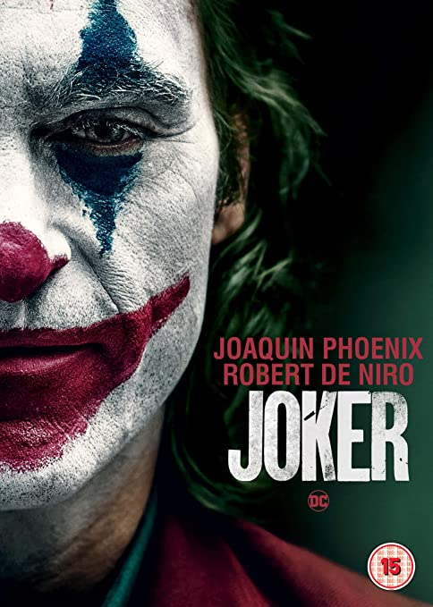

Todd Phillips
Todd Phillips, nascido em Todd Bunzl em 20 de dezembro de 1970, é um roteirista e diretor de cinema estadunidense. Ele é mais conhecido pelo super sucesso Joker que lhe rendeu indicações ao Óscar por Melhor Filme, Melhor Diretor e Melhor Roteiro Adaptado.
3 de outubro de 2019
Isolado, intimidado e desconsiderado pela sociedade, o fracassado comediante Arthur Fleck inicia seu caminho como uma mente criminosa após assassinar três homens em pleno metrô. Sua ação inicia um movimento popular contra a elite de Gotham City, da qual Thomas Wayne é seu maior representante.